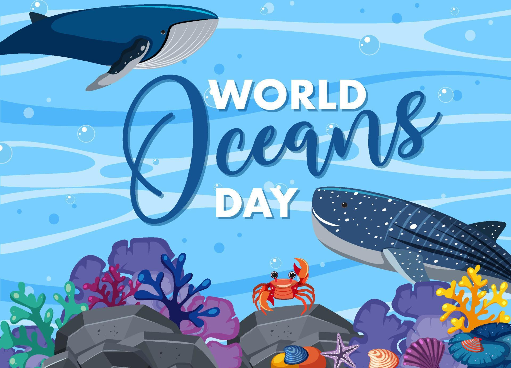

Animales marinos
Además de cubrir una extensión de más del 70% de la superficie de la Tierra, el océano es de especial importancia para la especie humana. Estas inmensas masas de agua albergan unas corrientes oceánicas que determinan las condiciones meteorológicas en el mundo y rigen la salud del planeta. Además, estas aguas albergan una increíble biodiversidad de la cual, aun a día de hoy, queda mucho por descubrir. La biodiversidad marina es un elemento fundamental para el desarrollo sostenible, tanto a nivel económico, social y ambiental, y deviene un sustento para la salud, el bienestar y la prosperidad para el ser humano.
Si te apasiona el mundo marino y quieres aprender más acerca de los animales de agua salada que dan vida a estos ecosistemas, te animamos a continuar leyendo este artículo que te presentamos desde EcologíaVerde, donde te hablamos sobre los animales marinos, sus características, tipos y lista de nombres de especies, así como una lista de animales marinos en peligro de extinción
Biografias de animales marinos
Calamar

Tiburon

Pez payaso